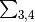

6.7. jules_radiation.nml¶
This file sets the radiation options. It contains one namelist called JULES_RADIATION.
6.7.1. JULES_RADIATION namelist members¶
- JULES_RADIATION::l_cosz¶
- Type:
logical
- Default:
T
Switch for calculation of solar zenith angle.
- TRUE
Calculate zenith angle.
- FALSE
Assume constant zenith angle of zero, meaning sun is directly overhead.
n.b. assuming that the sun is directly overhead may overestimate primary productivity if
l_triffid= TRUE (see GPP on JULES Output variables).
- JULES_RADIATION::l_spec_albedo¶
- Type:
logical
- Default:
F
Switch for the two-stream spectral land-surface albedo model.
- TRUE
Use spectral albedo with VIS and NIR components.
- FALSE
Use a single (averaged) waveband albedo.
- JULES_RADIATION::l_spec_alb_bs¶
- Type:
logical
- Default:
F
Switch for albedo model, when spectral albedo is being used.
Requires
l_spec_albedo= TRUE.- TRUE
Produces a single albedo for use by both the direct and diffuse beams (a ‘blue’ sky albedo). This currently copies the diffuse beam albedo for the direct beam.
- FALSE
Produces both a direct (‘black’ sky) and a diffuse (‘white’ sky) albedo.
- JULES_RADIATION::l_niso_direct¶
- Type:
logical
- Default:
F
Switch for using full non-isotropic expression for direct scattering in plant canopies when using the two-stream canopy radiation model.
Requires
l_spec_albedo= TRUE.- TRUE
Use full non-isotropic expression for scattering in plant canopies.
- FALSE
Use the original isotropic expression.
- JULES_RADIATION::l_snow_albedo¶
- Type:
logical
- Default:
F
Switch for using prognostic snow properties, which represents the effect of snow aging and soot deposition, in model albedo.
Requires
l_spec_albedo= TRUE.- TRUE
Use prognostic snow properties for albedo.
- FALSE
Calculate albedo of snow using only snow depth.
- JULES_RADIATION::l_embedded_snow¶
- Type:
logical
- Default:
F
Switch to account for pft LAI and pft height in calculation of snow albedo.
- TRUE
Use the embedded canopy snow albedo model. This is exclusive of
l_snow_albedo.- FALSE
No effect.
- JULES_RADIATION::l_mask_snow_orog¶
- Type:
logical
- Default:
F
Switch for orographic masking of snow, which decreases the albedo of snow in mountainous regions.
- TRUE
Include orographic masking of snow in calculating albedo.
- FALSE
No effect.
- JULES_RADIATION::l_albedo_obs¶
- Type:
logical
- Default:
F
Switch for applying a scaling factor to the albedo values, on surface tiles, so that the resultant aggregate albedo matches observations. The supplied albedos should be from an observed climatology or analysis system and be supplied via an ancillary file.
- TRUE
Scale the albedo values on tiles within the physical limits supplied in
JULES_PFTPARMandJULES_NVEGPARM. Whenl_spec_albedo= TRUE, VIS and NIR components are required and whenl_spec_albedo= FALSE the single (averaged) waveband albedo is required.Note
Observed albedo(s) must be prescribed in prescribed_data.nml.
- FALSE
Do not scale the albedo values on tiles.
- JULES_RADIATION::l_spec_sea_alb¶
- Type:
logical
- Default:
F
Switch to use spectrally varying open sea albedos
- TRUE
When
i_sea_alb_method= 1 or 2, spectrally varying sea albedos are produced only when the spectral file contains 6 SW bands identical to those used in HadGEM1.When
i_sea_alb_method= 3, the spectral variability is calculated as per the Jin et al. (2011) parameterisation.- FALSE
Uses the calculated broadband sea albedo instead.
- JULES_RADIATION::i_sea_alb_method¶
- Type:
integer
- Default:
None
Choice of model for the Ocean Surface Albedo (open water, ice free)
Diffuse albedo constant (0.06), direct albedo from Briegleb and Ramanathan (1982).
Diffuse albedo constant (0.06), direct albedo from Barker and Li (1995).
Direct and diffuse albedo from Jin et al. (2011).
Fixed global value, defined by
fixed_sea_albedo.Fixed global value, defined by
fixed_sea_albedo, above 271K and variable below this to simulate sea-ice following Liu et al. (2007), Joshi & Haberle (2012) and Turbet et al. (2016).
- JULES_RADIATION::fixed_sea_albedo¶
- Type:
real
- Default:
None
The global value of sea albedo to use if
i_sea_alb_method= 4, 5
- JULES_RADIATION::wght_alb¶
- Type:
real(4)
- Default:
MDI
Weights to form the overall albedo from its components (VIS direct, VIS diffuse, NIR direct, NIR diffuse) (Ideally, if
l_partition_albsoil= T,wght_albandswdn_frac_albsoilshould be consistent, withswdn_frac_albsoilequal to wght_alb
wght_alb. However,swdn_frac_albsoilis applied only to bare soil and having a single parameter is more transparent to the user, whilewght_albis used only in diagnostics in standalone JULES and may have historical settings. Hence, the consistency of these two variables is not enforced.)
- JULES_RADIATION::l_hapke_soil¶
- Type:
logical
- Default:
F
Switch to enable Hapke’s model of soil albedo to include a zenith-angle dependence
- TRUE
Apply a zenith-angle dependence to the direct albedo.
- FALSE
Use the diffuse albedo for the direct beam as well.
- JULES_RADIATION::l_partition_albsoil¶
- Type:
logical
- Default:
F
Switch to apply a spectral partitioning to the soil albedo.
- TRUE
Partition the soil albedo between the visible and near infrared parts of the spectrum using
ratio_albsoilandswdn_frac_albsoil.- FALSE
Apply the broadband albedo in both spectral regions.
- JULES_RADIATION::ratio_albsoil¶
- Type:
real
- Default:
MDI
Ratio of the NIR to the VIS albedo of bare soil. Used if
l_partition_albsoil= T.
- JULES_RADIATION::swdn_frac_albsoil¶
- Type:
real
- Default:
MDI
The fraction of the total downward SW radiation assumed to be in the NIR part of the spectrum for partitioning the soil albedo. Used if
l_partition_albsoil= T. (Ideally,wght_albandswdn_frac_albsoilshould be consistent, withswdn_frac_albsoilequal towght_alb
wght_alb. However,swdn_frac_albsoilis applied only to bare soil and having a single parameter is more transparent to the user, whilewght_albis used only in diagnostics in standalone JULES and may have historical settings. Hence, the consistency of these two variables is not enforced.)
See also
References:
Barker, H.W. and Li, Z. (1995), Improved Simulation of Clear-Sky Shortwave Radiative Transfer in the CCC-GCM. J. Climate, 8, 2213–2223, doi:10.1175/1520-0442(1995)008<2213:ISOCSS>2.0.CO;2
Briegleb, B. and Ramanathan, V. (1982), Spectral and Diurnal Variations in Clear Sky Planetary Albedo. J. Appl. Meteor., 21, 1160–1171, doi:10.1175/1520-0450(1982)021<1160:SADVIC>2.0.CO;2
Liu, J. , Zhang, Z. , Inoue, J. and Horton, R. M. (2007), Evaluation of snow/ice albedo parameterizations and their impacts on sea ice simulations. Int. J. Climatol., 27: 81-91. doi:10.1002/joc.1373
Zhonghai Jin, Yanli Qiao, Yingjian Wang, Yonghua Fang, and Weining Yi, “A new parameterization of spectral and broadband ocean surface albedo”, Opt. Express 19, 26429-26443 (2011), doi:10.1364/OE.19.026429
B. Hapke, “Bidirectional reflectance spectroscopy: 1. Theory”, J. Geophys. Res. 86(B4), 3039-3054 (1981), doi:10.1029/JB086iB04p03039
Manoj M. Joshi and Robert M. Haberle. Astrobiology. Jan 2012. ahead of print doi:10.1089/ast.2011.0668
Martin Turbet, Jérémy Leconte, Franck Selsis, Emeline Bolmont, François Forget, Ignasi Ribas, Sean N. Raymond and Guillem Anglada-Escudé (2016), The habitability of Proxima Centauri b - II. Possible climates and observability, A&A, 596, A112, doi:10.1051/0004-6361/201629577